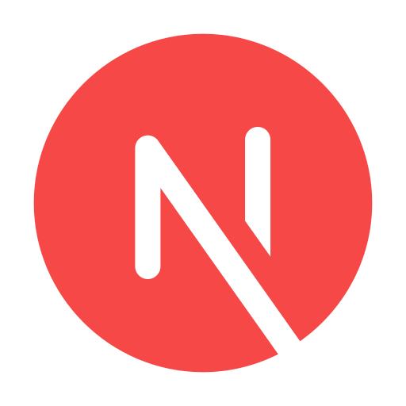
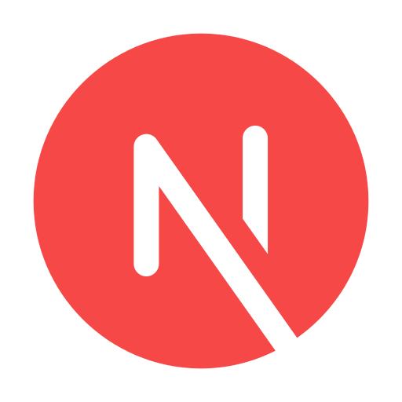
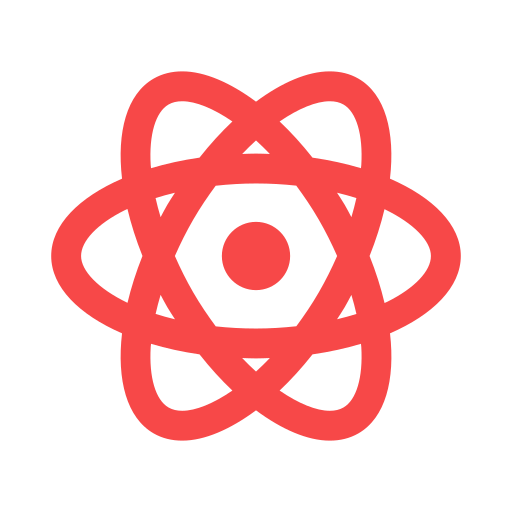
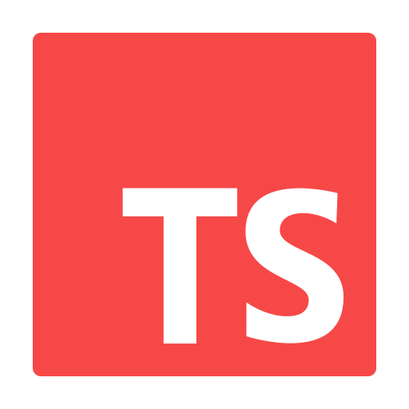
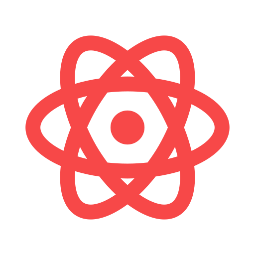
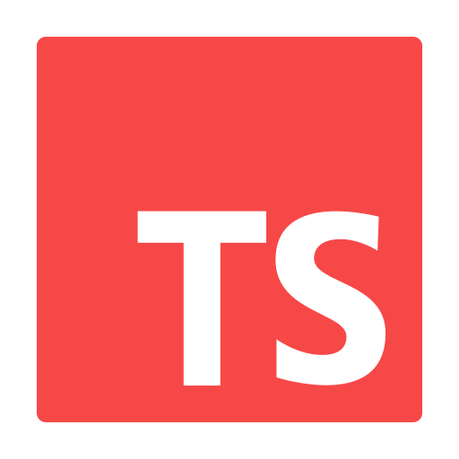

Me chamo André Silva e resido em Piquete no interior de São Paulo.
Sou uma pessoa que ama tecnologia e estou sempre disposto a aprender coisas novas, sou muito persistente naquilo que almejo e nunca desisto dos meus objetivos, tenho minhas individualidades mas prefiro trabalhar em equipe, desta forma posso treinar duas das minhas qualidades que são, sempre buscar aprender e sempre repassar o que aprendi.
Ao longo de 20 anos atuando como Instrutor de cursos profissionalizantes, adquiri várias habilidades didáticas para repassar da melhor forma possível meus conhecimentos.
Alguns dos principais conteúdos que ensinei foi HTML, CSS e Java Script onde os alunos tinham uma boa noção de como funcionava a criação de páginas web e assim despertar seus interesses para de repente, se tornarem um Desenvolvedor Web.
Na minha jornada como Dev Front-End Web, adquiri domínio em diversas ferramentas e padrões essenciais para o desenvolvimento. Meus conhecimentos em algumas tecnologias como React, NextJS, Typescript, TailwindCss entre outros, garantem a criação de aplicativos com uma estrutura sólida e de fácil manutenção incluindo o uso de várias bibliotecas para estilizar as aplicações.
Tenho conhecimento em frameworks populares como Firebase e Docker, permitindo-me, integrar APIs externas e ampliar as funcionalidades dos aplicativos desenvolvidos. A qualidade é uma prioridade para mim, e utilizo ferramentas de testes para garantir que meus aplicativos estejam perfeitamente funcionais.
Colaboração efetiva é fundamental então utilizo, Git e GitHub para trabalhar de forma colaborativa. Acredito que um ambiente de trabalho assim é essencial para o sucesso de um projeto.
Meus HobiesSou um Pai de família e tenho 3 filhos, meu passa tempo é aproveitar cada minuto que posso com eles, na minha rotina semanal, tiro um tempo para me dedicar aos estudos, gosto de ouvir musicas, gosto de passear aos fins de semana mas um dos meus hobies preferidos é o Judô, apesar de ainda não praticar 2 dos meus filhos praticam e gosto muito de acompanhar eles em seus treinos e tormeios.
Projeto criado para divulgar a Academia de Judô AJP, foi utilizado alguns efeitos de transição e animação em alguns componentes do site além de estar configurado para dispositivos menores e mobiles.
Projeto criado para divulgar uma plataforma de uma comunidade Web3, foi utilizado alguns efeitos de transição e animação em alguns componentes do site além de estar configurado para dispositivos menores e mobiles.
Projeto criado para disponibilizar tarefas vindas do Github e dando oportunidade para que os usuários possam executar essas tarefas podendo ao fim serem recompensados com algum valor ou somente terem a oportunidade de ganharem experiência.
 

 



2000 - Atualmente
Desenvolvimento de features na seção Web3Task, utilizando React, JS, Typescript e TailwindCss. Sigo orientações no Figma para desenvolver o layout e também ajustar os conteúdos para a versão mobile.
Geração de imagens e vídeos utilizando Inteligência Artificial, criando Prompts de Texto para imagens usando a ferramenta Leonardo AI e também Prompts de texto para vídeos com a ferramenta Runwayml AI. Utilização do PhotoShop para fazer as correções necessárias para a utilização das imagens com alta qualidade e perfeição.
Atuei na criação de Apps whitelabel, era responsável pelo desenvolvimento de novas tasks utilizando Viewcode, Xibs e frameworks como Alamofire, Firebase e consumo de Apis para o desenvolvimento dos Apps, participação ativa nas calls de apontamentos e direcionamento de novos recursos.
Administrador da Empresa, fazia atendimento ao cliente para serviços de diversos assuntos, fazia manutenção de computadores e notebooks, venda de produtos de Informática, atuava também como Instrutor de Cursos Profissionalizantes de Informática Básica, Designer Gráfico e Web Designer com introdução ao HTML, CSS e Java Script.
Atuava como Instrutor de Cursos Profissionalizantes de Informática Básica (Windows e Office), Curso de Manutenção de Hardware, Designer Gráfico (Corel Draw e Photoshop), Web Designer (HTML/CSS, Java Script) e Cursos Administrativos Simulados.
Atuava como Instrutor de Cursos Profissionalizantes de Informática Básica (Windows e Office), Curso de Manutenção de Hardware, Designer Gráfico (Corel Draw e Photoshop) e Web Designer (HTML/CSS, Fireworks, Flash e Dreamweaver).
1998 - Atualmente
Cursando o 5º Semestre na UNIVESP - Polo de Piquete/SP, com previsão de finalização em Agosto de 2025.
Fiz vários cursos para melhorar minhas skills em algumas das melhores plataformas online como Alura, Backfront Academy e Udemy. Fiz cursos de iOS, React com NextJS, Typescript, TailwindCss entre outros.
Me formei no Centro Paula Souza (Etec) da cidade de Cruzeiro/SP, lá aprendi os conceitos de programação, manutenção de computadores e funcionamento de redes.
Encerrei meu Ensino Médio na escola Profª Leonor Guimarães na cidade de Piquete/SP.